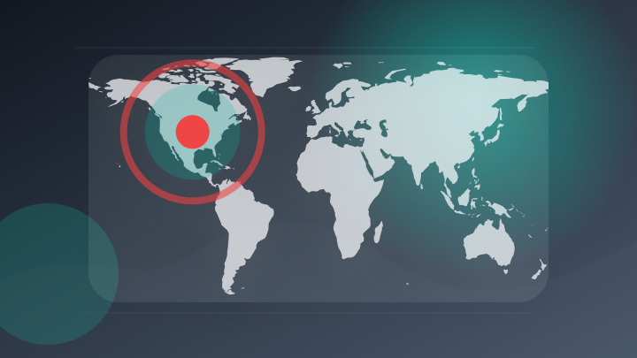
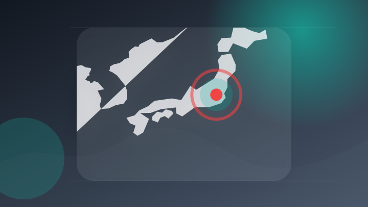
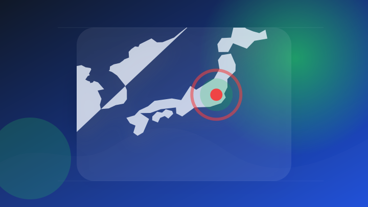
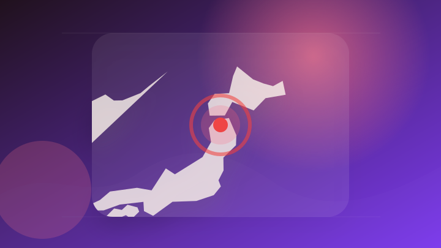
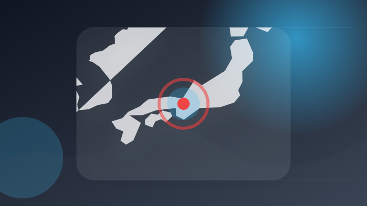

AI
6 topics

AI 大手報道 報道確認 仕事で使える
【AI vs. 宗教のアメリカの深層】「福音派」著者・加藤喜之／「反キリスト」と呼ばれるAI規制派／ザッカーバーグ氏のAI論とシリコンバレーのリアル／“キノコ雲”を誇るアメリカの町
【AI vs. 宗教のアメリカの深層】「福音派」著者・加藤喜之／「反キリスト」と呼ばれるAI規制派／ザッカーバーグ…
注目ポイント注目度 70点
AI 専門メディア 複数社で確認 仕事で使える
ChatGPT、Macの操作を記憶する「Computer History」
注目ポイント独立2媒体｜注目度 69点
AI 配信記事 速報・続報待ち 仕事で使える
AIが作った金融文書の根拠まで追跡する…サイオニックエイアイが規制産業用エージェントを開発
注目ポイント注目度 67点
AI 専門メディア 報道確認 仕事で使える
OpenAIにはサム・アルトマンCEOや経営陣に直接苦情を送ることができる専用のメールアドレスがある
注目ポイント注目度 64点

AI 大手報道 報道確認 仕事で使える
AiHUBの生成AIツール「CW Canvas」がByteDance「Seedance 2.5」に対応。IP権利証明でフィルター解除できる「日本初」ツールのクローズドβ版ウェイトリストを公開
AiHUBの生成AIツール「CW Canvas」がByteDance「Seedance 2.5」に対応。IP権利証…
注目ポイント注目度 64点
AI 配信記事 速報・続報待ち 仕事で使える
AnthropicのClaudeウォーターマークは文法チェックで破れると開発者Theo氏が指摘
注目ポイント注目度 61点
IT業界
6 topics
IT業界 専門メディア 複数社で確認 仕事で使える
Microsoft、画像生成AI「MAI-Image-2.6」を発表 ～「Text-to-Image Arena」で2位を獲得
Microsoft、画像生成AI「MAI-Image-2.6」を発表 ～「Text-to
注目ポイント独立2媒体｜注目度 69点
IT業界 専門メディア 報道確認 仕事で使える
MicrosoftのAIターミナル「Intelligent Terminal 0.2」が公開 ～ローカルモデルに対応
MicrosoftのAIターミナル「Intelligent Terminal 0.2」が公開 ～ローカルモデルに対…
注目ポイント注目度 64点
IT業界 大手報道 報道確認 要注意
サイバーセキュリティクラウド[4493]：2026年12月期 第2四半期（中間期）決算短信〔日本基準〕（連結） 2026年8月14日(適時開示) ：日経会社情報DIGITAL
サイバーセキュリティクラウド[4493]：2026年12月期 第2四半期（中間期）決算短信〔日本基準〕（連結） 2…
注目ポイント注目度 64点

IT業界 配信記事 速報・続報待ち 動向確認
デジタルガレージとDGビジネステクノロジー、国内初となる、エージェンティックコマース最適化を実現する統合プラットフォーム「DG Agentic One(TM)」を提供開始｜Infoseekニュース
デジタルガレージとDGビジネステクノロジー、国内初となる、エージェンティックコマース最適化を実現する統合プラットフ…
注目ポイント注目度 61点
IT業界 配信記事 速報・続報待ち 動向確認
神宮前交差点に「Google Store 表参道」オープン、Google公式グッズも販売
注目ポイント注目度 61点
IT業界 配信記事 速報・続報待ち 動向確認
サムスンがGoogleを祝福――「Google Store 表参道」誕生で ライバル同士の意外なやりとり
注目ポイント注目度 61点
政治
3 topics
社会
3 topics
事件・事故
6 topics

事件・事故 大手報道 報道確認 要注意
自転車の小学生ひき逃げ重傷事故 逮捕した男性を処分保留で釈放し任意捜査へ 青森地方検察庁弘前支部
注目ポイント注目度 70点
事件・事故 配信記事 速報・続報待ち 動向確認
プリシュティナ地方裁判所の判事が職権乱用の疑いで逮捕された。
注目ポイント注目度 67点
事件・事故 配信記事 速報・続報待ち 動向確認
神奈川の男性を釈放 不同意わいせつ容疑で逮捕、任意捜査へ／青森地検
注目ポイント注目度 67点
事件・事故 配信記事 速報・続報待ち 要注意
小田原の国道で道路標識に衝突、乗用車の男性死亡 現場は片側１車線の直線
注目ポイント注目度 67点
事件・事故 配信記事 速報・続報待ち 要注意
道路に横たわっていたか 郡山市の市道で県職員の男性がひかれ死亡 | ふくしまNEWS - KFBデジタル -
道路に横たわっていたか 郡山市の市道で県職員の男性がひかれ死亡 | ふくしまNEWS - KFBデジタル
注目ポイント注目度 67点

事件・事故 配信記事 速報・続報待ち 要注意
【速報】国道で28歳運転の軽乗用車にはねられ、91歳女性死亡 国道を横断中
注目ポイント注目度 67点